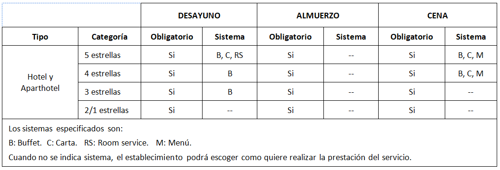
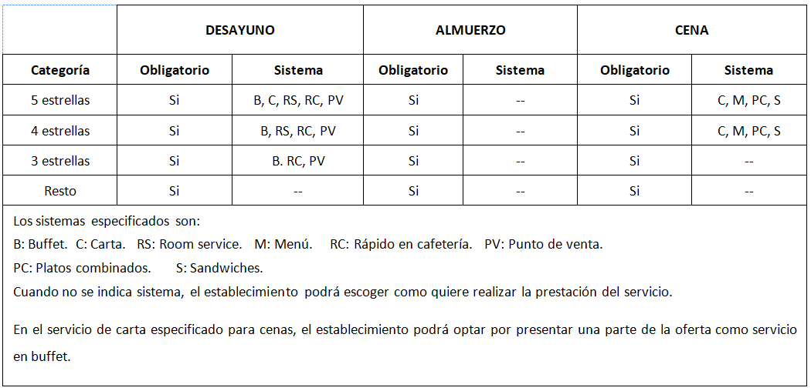
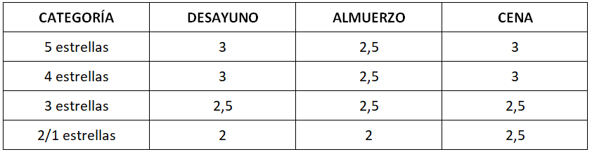
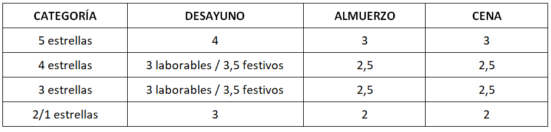

El restaurante se define como un establecimiento público, destinado al servicio de comidas y bebidas, mediante precio, para ser consumidas dentro del local. En realidad, el restaurante realiza la presentación y servicio de diferentes ofertas gastronómicas, algunas de las cuales son obligatorias, siempre según los dispuesto en la Norma UNE 182001:2008. Estos servicios son: desayuno, almuerzo y cena.
Como norma, para los servicios a realizar, las dimensiones mínimas de los platos a emplear serán de 27 cm. de diámetro, en el caso de servicios de Menú o Carta, y de 22 cm. de diámetro en los servicios realizados en Buffet.
Aparte de lo que se dispone en los requisitos generales, los servicios de obligada prestación en establecimientos vacacionales son los siguientes:

En el caso de los hoteles de ciudad:

A este cuadro es conveniente incorporar algunas variaciones pues queda abierta la posibilidad de realizar servicios determinados en la Cafetería, de realizar servicios de desayuno a la carta con la misma oferta que el buffet para momentos de ocupación inferior al 30 %, o la significativa obligación de realizar cocina en vivo para los buffet de cena en los hoteles de 5 estrellas, los cuales, además, dos días a la semana deben ser temáticos.
Relativo a los requisitos generales, se mantienen idénticos a los que se relacionan en el caso de la Cafetería, aunque existen algunas matizaciones, que se exponen a continuación.
Para los hoteles y aparthoteles de tipo vacacional se establecen las siguientes franjas horarias, destacando que, en el caso de que todos los clientes hayan hecho uso de cada uno de los servicios, podrá darse por terminada la sesión sin que se cumpla la totalidad del horario:

En el caso de los hoteles de ciudad existen algunas variantes, si bien la Norma invita a una mayor flexibilidad para adaptarse a los gustos y necesidades de los clientes, debiendo asegurar la existencia de un desayuno frío con bebida caliente y la posibilidad de cena fría a los clientes que la soliciten con antelación. Los horarios previstos para los hoteles de ciudad son:
